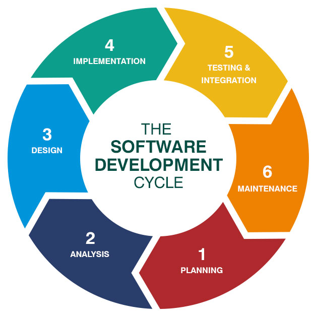

- ¿Cuál es la diferencia entre Internet y la World Wide Web?
WWW son las siglas de la World Wide Web, que es una colección de páginas.
Internet es una red de computadoras que se encuentran alrededor del mundo y están conectadas entre sí.
Por lo que la WWW necesita internet para funcionar y sin ella sería muy difícil acceder a la información que se encuentra disponible en internet
- ¿Cuáles son las partes de un URL?
URL significa Uniform Resource Locator, es una dirección asignada y específica a cada una de las páginas de la WWW para que sean localizadas fácilmente tanto por el navegador como los usuarios
Esta compuesta por:
- Esquema: es el protocolo de inicio empleado para la transmisión de datos entre ordenadores y la recuperación de la información de internet. En la mayor parte de los casos el esquema se corresponde con: http o https.
- Host: normalmente, para el protocolo http, el host es: www.
- Dominio: corresponde con el nombre del dominio de cada sitio web, como: edix.com.
- Puerto: define el nombre del puerto según el host. Para el protocolo http, el puerto por defecto es 80, pero esta parte suele omitirse.
- Nombre de archivo: define más detalladamente las características del documento: videos-gratis. (Edix, 2022)
- ¿Cuál es el propósito de los métodos HTTP: GET, HEAD, POST, PUT, PATCH, DELETE?
- PUT: Actualizar o insertar un recurso proporcionando el ID exclusivo del recurso
- POST: Actualizar o insertar un recurso
- DELETE: Solicita que se borre el recurso, requiere el ID exclusivo del mismo
- GET: Solicita información o recurso en especifico
- HEAD: Recibe el titulo de la página que se solicita
- POST: Se usa para enviar datos al servidor
- PATCH: Actualiza parcialmente el recurso.
- ¿Qué método HTTP se debe utilizar al enviar un formulario HTML, por ejemplo cuando ingresas tu usuario y contraseña en algún sitio? ¿Por qué?
POST, ya que se usa para enviar datos al servidor
- ¿Qué método HTTP se utiliza cuando a través de un navegador web se accede a una página a través de un URL?
GET, ya que solicita esa URL en especifico
- Un servidor web devuelve una respuesta HTTP con código 200. ¿Qué significa esto? ¿Ocurrió algún error?
Es una respuesta satisfactoria
- ¿Es responsabilidad del desarrollador corregir un sitio web si un usuario reporta que intentó acceder al sitio y se encontró con un error 404? ¿Por qué?
El error 404 significa que no se encontró el contenido solicitado. No es responsabilidad del desarrollador, ya que significa que o no existe, se typeo mal o se ha cambiado la liga de la pagina
- ¿Es responsabilidad del desarrollador corregir un sitio web si un usuario reporta que intentó acceder al sitio y se encontró con un error 500? ¿Por qué?
Sí, porque es un error del servidor lo cual compete al desarrollador.
- ¿Qué significa que un atributo HTML5 esté depreciado o desaprobado (deprecated)? Menciona algunos elementos de HTML 4 que en HTML5 estén desaprobados.
Que debido a las nuevas tecnologías ha quedado desactualizado y por ende son anticuados
- Menciona algunos elementos de HTML4 que en HTML5 estén desaprobados
- big
- center
- font
- dir
- frame
- ¿Cuáles son las diferencias principales entre HTML 4 y HTML5?
- Mayor compatibilidad
- Soporte multimedia
- Mejor rendimiento y soporte móvil
- Mejores controles de formularios
- ¿Qué componentes de estructura y estilo tiene una tabla?
- caption: Provee un título para la tabla.
- colgroup: agrupa columnas temáticamente.
- col: aplica atributos comunes y estilos a una o más columnas. Sólo puede ser declarado como hijo de colgroup.
- tbody: representa a un cuerpo de la tabla.
- thead: representa la sección de encabezado de la tabla.
- tfoot: representa la sección de pie de la tabla.
- tr: representa una fila. Puede ser declarado como hijo de tbody, thead, tfoot o table.
- td: representa a una celda regular. Sólo puede ser declarado como hijo de tr.
- th: representa a una celda de encabezado. Sólo puede ser declarado como hijo de tr.
- ¿Cuáles son los principales controles de una forma HTML5?
Button, checkbox, file, image, password, submit, text.
- ¿Qué tanto soporte HTML5 tiene el navegador que utilizas? Puedes utilizar la siguiente página para descubrirlo: http://html5test.com/ (Al responder la pregunta recuerda poner el navegador que utilizas)
466 de 555 puntos. Mozilla Firefox
- Sobre el ciclo de vida y desarrollo de los sistemas de información:
¿Cuál es el ciclo de vida de los sistemas de información?
Un modelo de ciclo de vida de software es una vista de las actividades que ocurren durante el desarrollo de software.
Intenta determinar el orden de las etapas involucradas y los criterios de transición asociadas entre estas etapas.
Un modelo de ciclo de vida del software:
- Describe las fases principales de desarrollo de software.
- Define las fases primarias esperadas de ser ejecutadas durante esas fases.
- Ayuda a administrar el progreso del desarrollo, y
- Provee un espacio de trabajo para la definición de un detallado proceso de desarrollo de software.
(Canepa & Garcia, s. f.)
¿Cuál es el ciclo de desarrollo de sistemas de información?

(Bwc, 2020)